|
INTRODUCTION:
THE BERMUDA TRIANGLE
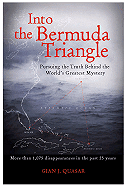 The list of eyewitnesses and survivors of extraordinary and unexplainable events in the Bermuda Triangle is impressive. Airliner pilots have encountered unexplained and severe “jolts” and “pulses” out of nowhere that have sent big jumbos dashing to the surface in precipitous dives. Clouds have “come out of nowhere” and caused compasses to spin and engine RPMs to drop off. Objects and luminous phenomena have sped past. All electronic equipment has ceased for no known reason: cell phones, radios, navigational equipment, LORAN (LOng RAnge Navigation). There are areas of dead spots, bending of space, loss of horizon. Below are just a few examples of some of the cases. These are not cranks or crackpots. All are accomplished pilots or shipmasters. These and dozens more can be found in “Into the Bermuda Triangle” by Gian J. Quasar, which can be purchased from Amazon.com by clicking on the hyperlink.
| 1956 |
|
1970 |
|
2001 |
|
| Even the Coast Guard has been the unwitting victim of the unusual. A classic case. |
|
One of the strangest and most unusual flights in the Bermuda Triangle. It is engraven on the pilot’s mind to this day. |
|
A phenomenal sighting! A pattern is emerging. |
|
|
|
|
|
|
|
| Frank Flynn |
|
Bruce Gernon |
|
Paul Vance |
|
| “I talked to many oceanographers, and none of these people could shed any light whatsoever on what it might have been.” |
|
“It has become a permanent part of my memory, since I have been memorizing it for over 30 years.” |
|
“I thought, My God there is something to this Bermuda Triangle stuff after all.” |
Click on the image of either Frank Flynn, Bruce Gernon, or Paul Vance or click on the following hyperlink to go to www.Bermuda-Triangle.Org, “Those Who Lived to Tell” for greater detail on the experiences of these individuals.
So what may you ask is the connection between the Bermuda Triangle mysteries and Bob Lazar’s “Sport Model Flying Disc” with its gravity field propulsion system or the “Philadelphia Experiment and the Secrets of Montauk?” Ship’s crews and aircraft pilots traveling through the Bermuda Triangle have reported strange clouds or fog and have reported their compasses going into a spin. The spinning compasses would indicate movement through an intense rotating magnetic field. The following theories of the Bermuda Triangle mystery seem to indicate the same laws of physics that are associated with UFO propulsion systems and the attempt to make a U.S. Navy Warship visually and RADAR invisible during the “Philadelphia Experiment” in 1943 may be related. Gravity amplification and Space-Time Compression are produced by rotating magnetic fields as demonstrated by V. V. Rochin and S. M. Godwin’s Gravitational Converter. The following information is provided courtesy of www.Bermuda-Triangle.Org.
Disappearances have confounded and entranced people for thousands of years, from Enoch’s sudden disappearance to Ambrose Bierce’s popular 1880’s articles of people disappearing while simply walking in a field. But one thing is consistent within the stories, whether true or false — a vortex or funnel is often written in. For Bierce, these were invisible funnels within a prairie, or anywhere, into which an unsuspecting person walked and was held in a different time or space, though certainly Space-Time Warps were not even a part of scientific or popular vernacular in the 1880s. For Elijah, he was taken away in a “fiery whirlwind” — a vortex. For Ezekiel’s vision, whirlwinds turned within whirlwinds.
For the cynical these were only fanciful stories, and Bierce’s were Saturday afternoon mystery magazine pulp. But literature has an uncanny way of being prophetic. In the great scientific age of the 20th century, it was discovered that all matter is actually at a level of vortex kinesis, that is, swirling or spiraling motion. Whether it is the great galaxies, planets, suns, or the smallest atoms, all things rotate upon an axis and revolve around a core. The natural action of energy is vortex kinesis.
In this article we will probe into what the effects might be if nature or mankind intensified this action within matter. Can we disrupt the natural rhythm of matter? Can we affect time, matter and space by doing so? Let’s go on a journey through facts and potential.
With the 20th century there came mankind’s ability to support a thriving scientific culture. This allowed men of science to start contemplating such things as space-time warps. Perhaps they were urged to do so because of popular belief in such topics as expressed in Bierce’s Saturday afternoon pulp or in such popular occult stories as Oliver Lerch’s sudden vanishing.
The truth or falsehood of these stories is not important here. What is important is that they captured popular imagination, and perhaps made it acceptable for men of science to speak in serious terms about their possibility.
The most famous to give rational body to the idea of space-time warps was undoubtedly Dr. Albert Einstein. His own quote, one of my favorites, set the tenor for his modis operandi for scientific discovery: “Science is merely the refinement of everyday thinking.”
Using his “Thought Experiments,” his scientific knowledge allowed him to temper and direct his imagination. Thus while other physicists came out of school with the same education he had, they went on to perform only the mechanics of physics, but not the artistry that Einstein would pioneer. In essence, he sat back and thought; he considered; he imagined. These were not flights of fancy; they were based on facts established and rational inference from observed data.
He imagined himself speeding in space, and came up with Relativity. He postulated that gravity was not a force at all, but a curvature of space around a massive body, like a planet, speeding through space. He further postulated that time was continuous with space.
An example may help us to understand. Two speeding cars pacing each other seem not to be moving at all to those inside each. But to a person standing on the side of the road, the cars zoom past at fantastic speed and are gone. But to those inside, life would remain the same; they would see the next car pacing them. It would be the same because they are being propelled at the same speed as the cars. Our planet is like one of those cars: it is being propelled in space, and us along with it.
The car can be considered in a progression of time as well. Move anywhere on that car and you are fine, or even jump to the next car. It is all right so long as you move to anything moving at the same progression. But try and step off that car while it is moving and you are left in the dust. The car speeds out of sight. Your world has gone. You are now in a diferent progression. You can’t get back until you accelerate fast enough to overtake that car.
Einstein postulated that a curvature of space would cause even light to bend through it— an electromagnetic wavelength that traditionally follows straight lines. Maverick idea. But in 1919 Sir Arthur Eddington detected a change in a star’s position during a total eclipse. Einstein seemed to be right: space was curving around the planet, and light was being bent. He was awarded his doctorate, which in part read cautiously “for adding significantly to the body of theoretical physics. . .” Relativity would not be mentioned, as nobody was sure what that was.
So it seemed space indeed was curving around masses in Space. If this was gravity or the result of gravity, no one is still sure. But if light were affected, it seemed too that other or all energy wavelengths might be affected. After all, light is only an electromagnetic wavelength. If light was curving, then it was slowing. Might the same be true of space? Then if time and space were continuous, might it then also be true of that greatest mystery—Time? Could we slow time by bending space?
The cornerstone of Einstein’s Relativity was, of course, E = mc2 — that is, energy equals mass times the speed of light squared. It is actually a simple equation, but its ramifications are monumental and universal. It means that there is an incredible amount of energy in any object, if we could just get at it in the nucleus of its atoms. If this could be verified, it would seem to mean that Relativity’s basic tenants of space and energy and time being continuous would be one step closer to fact.
It would be by the nuclear detonations at Alamogordo, New Mexico, July 16, 1945, that E = mc2 would be proved. A chain reaction in the uranium atom caused the greatest explosion man had ever known. The atomic age had dawned.
As the space age dawned, further proof came of Einstein’s concept of the continuity of time and space. Atomic clocks placed at orbital heights recorded time passing just slightly faster than those at sea level. Where gravity, and hence a curvature of space, was greatest time moved more slowly; where it was not, more quickly. The passage of time as we record and experience it here was actually slower than in space.
Mass— such as this planet— did seem to bend space before it, and with this it did seem to slow time. Fractionally, granted. But it finally opened the labyrinth of time to logical conquest. Theoretically, it was proposed the greater the curvature of space, the greater time would be slowed. But if the Earth could only slow time fractionally by is massive size and speed through space, what “on earth” or anywhere else could bend space even more to significantly affect the progression of time?
Now, in the above examples of speeding cars obviously they cannot go fast enough to truly bend space and lock one into a different progression of time. But would it really require huge mass and speed to do it? The planet was indeed doing it slightly. But if time’s pathway lay along energy, could not bending or changing its electromagnetic frequencies also bring this about? There must be other methods to bend electromagnetic wavelengths.
Atomic Clue
We must first begin with the atom, any atom. There are only a little over 100 atoms in all the Universe that we know of. All that we see is built out of these and out of a combination of these. All atoms are made up of protons, electrons and neutrons, except hydrogen which has no neutron. No atom is different than the other except in number: Helium, Calcium, Titanium, Tin, whatever; they are all the same thing . . .except in number. They follow an orderly mathematical progression. Hydrogen, the simplest atom, has 1 proton in the nucleus and 1 electron in orbit. Helium has 2; 3 protons in the nucleus and 3 electrons in orbit is no longer a gas; it is Lithium, a silver-while metal. It goes on and on to Seaborgium, with 106 protons in the nucleus.
Therefore, the difference between all matter must be the electromagnetic energy created by the different number of these charged particles, not in the basic make up of these particles as individuals. The reason Nitrogen and Oxygen are such different gases cannot be that Nitrogen has 7 protons and 7 electrons and that Oxygen has 8 of each; it must be in the different amount of electromagnetic energy that that one proton and one electron make that changes the substance.
The difference is not in the makeup of the particles, but in the space between the particles in orbit (electrons) and the nucleus (with protons). That space is the substance of everything. That space is electromagnetic energy. That space is “reality.” That space is the atom. Electromagnetism is the substance of everything. In essence, that “space” is the substance of all structure. That space is energy.
Understanding the structure of all matter is fundamental to understand the limitless potential of manipulating or warping electromagnetism, since by doing so you are capable of affecting the very energy that creates all things. This is far superior to the mere splitting of the nucleus of a complex atom. That only provides a violent form of energy. Within the electromagnetic force of the atom is the key to everything: creation, transmutation . . .limitless power.
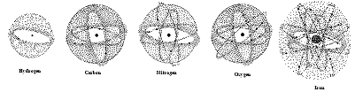
Hydrogen, Carbon, Nitrogen, Oxygen, and Iron Atoms
Single atoms of five common elements: Hydrogen; Carbon; Nitrogen; Oxygen; and Iron. Not only does the varying number of protons in the nucleus and the varying number and system of orbits of electrons make one substance different from the other, the proximity of one type of atom to another creates an unlimited array of substance.
Water molecule H2O. In other words, 2 atoms of Hydrogen and 1 atom of Oxygen. Two gases combine to make a liquid. It is not a material difference: the protons are still protons, the electrons still electrons. Electromagnetic energy has been affected by the proximity of these charged particles making up the atoms. A new substance is created.
To give you an idea of how universal are these substances and how limitless the potential of what they can create, here is an atomic formula:
C3032H4812N780Fe4O872S12
Do you know what this formula is? It is the most complex molecule known to man: the red blood cell. Put those many atoms of each substance—three thousand and thirty two atoms of carbon, four thousand eight hundred and twelve atoms of hydrogen, seven hundred and eighty atoms of nitrogen, four atoms of iron, eight hundred and seventy two atoms of oxygen, and twelve atoms of sulfur together in the right order and you have the most complex molecule we know of. It is something so tiny one needs a high powered microscope in order to see it. The speed with which the red blood cell carries out its complex functions is incredible. The complex data it carries is even more mindboggling. Its communication with the miniscule receptors in the bodily tissues is equivalent to writing the Gettysburg address on the point of a pin while passing that pin after being shot out of cannon.
|
|
Atomic Bomb
Albert Einstein
“Science is merely the refinement of everyday thinking.” Einstein was more than a scientist. He was actually a great thinker. The worst in science merely see fact, but the best see potential. Einstein always considered the potential of any common fact.
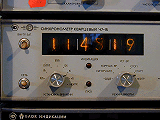
Atomic Clock
Wherever there is an electric current, there will be a magnetic field at a right angle to it. Magnetism goes hand in hand with electricity. The electron is considered a negative charged particle, while the proton is regarded as a positive charged particle, hence the attraction between them. A neutron is considered a neutral charge and capable of taking either charge. Electric current is no mystery, but the fact that these tiny particles naturally carry charges, and conveniently opposite charges at that, is a great mystery of matter. They exist independent of atoms, and solar storms are when charged particles bombard the Earth.
Lithium Atom
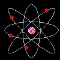
Beryllium Atom
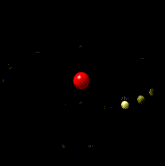
Hydrogen Atom
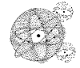
Water Molecule
Red Blood Cells
|
Transmutation
Radioactive decay. The means by which one elements becomes another. The isotope Uranium 238 (92 protons and 146 neutrons in its nucleus) is unstable, meaning it sheds these particles from its nucleus. Doing so, the vital loss of these protons and neutrons changes it to another substance: a lesser complex one. In this decay chain Uranium changes eventually to common and stable Lead.
 |
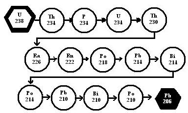
Decay Chain for Uranium-238
|
|
The loss of these particles obviously means the change in the electromagnetic force of the atom in question. Losing some of its 92 protons requires that it shed the equal number of electrons. It becomes a less complex atom eventually such as lead, where the process stops. Transmutation is the result of the electromagnetic energy changes that result. In this we can see the power contained in the electromagnetic forces that bind the atom, created by the various particles, their systems of orbit and their number.
Most substances, fortunately, aren’t like Uranium 238. They are stable and do not decay. But the example of radioactive decay shows us the power of changing the electromagnetic energy of any atom. If we could do so, then we could effectively carry on any form of transmutation we want.
This must be the basis behind the success of the Hutchison Effect. There can be no other proposal. To render items invisible, at other times transmute them from one substance to another, make objects levitate, burn white hot but not melt surrounding flammable material, or make things “cold melt,” fuse, or disappear, can only be because the atoms of that particular substance and the particular frequency each one has, was interrupted or warped, while the other substances, being on a different frequency (due to the different number of charged particles therein) were unaffected. This is limitless power . . . if harnessed repeatedly.
What potential exists within nature to create these electromagnetic changes or bend them in such a sense that it imitates bending of space? How intense does it need to be to cause something we today consider “supernatural” or impossible? Now we get to the Triangle and to the reports of electromagnetic anomalies and aberrations, disappearances, disintergrations— the crux of its infamous mystery. Are these indicators that electromagnetic aberrations are occurring for some unknown reason?Underscoring the above is crucial to understanding a space warp.
Space Warp
The atom is often likened to a “mini solar system, most of it space.” It is always surprising to realize that this is true, that the structure of the atom is energy in a confined space between revolving charged particles. Since everything is made of atoms, everything in this Universe is mostly energy, not materially particulate. The electrons, protons and neutrons are only a small part of the atom. It is the space between them that is, ironically, the “substance.” Space in this case filled with electromagnetic energy.
Therefore all matter is not only mostly energy, but it is mostly space. This is hardly philosophy disguised as science. This is simple fact. In the above example of the red blood cell, we noted the number of each atoms. This translates to 102,408 charged particles making up the atoms of its structure. These same particles are what is in your computer key board, a wall, a car, rubber, anything. The red blood cell is different because of their arrangement. This creates the red blood cell. Remove the space from that red blood cell and no microscope will be able to detect those tiny particles.
It is the same for everything. Remove the space from it, and you have very little.
It is possible to estimate how many charged particles are in any given substance. Simply consider there are 30,000,000,000 red blood cells in the body. Mathematically, it is possible to determine how many electrons and protons and neutrons make up the blood. Add the volume of all tissues, of every atom from calcium to Iron, to whatever. It is beyond number probably. Take all the space out of the human body and all these charged particles would form a pile that is still so small it is invisible.
The same for a wall— if you know the volume of wood, plaster, etc., and you know the atoms that are the building block of these substances. You can then calculate how many charged particles are in an 8 x 10 wall. Remove the space from a wall and the combined particles might not even form a pellet the size of a small baby aspirin. In other words, take the space out of everything and what you have left isn’t much.
If all is mostly space, why can’t one substance pass freely through another? Go ahead and run to a wall. You wont go through. It’s been tried. It doesn’t work. It is not, however, a collision of particles which prevents you from walking through; it is a collision of forces. The atoms of our body: hydrogen, oxygen, nitrogen, calcium, zinc, iron, whatever, are the same as those in the wall; they are in tune, on the same frequency. They are mutually interactive. It is not possible to break the forces . . . or is it?
An electric current is nothing more than electron particles traveling along in the same direction, usually along a wire. These are the same very tiny particles that make of the key elements of every atom: they are the ones whose tremendously speedy revolutions around the atomic nucleus, and by their number and their speed, help to create the energy of each substance.
If I were to take 1,000,000 volts of high frequency electricity (at 60 cycles alternating current) and pass it through my body to ground there is no question I would look like Ramses’ mummy in short order. I would be instantly killed. The trillion, trillions, countless trillion and giga trillions of electrons would destroy my whole body .... Remember, 1 ampere measurement of electric energy is equal to 63.3 billion billion electrons per second at any given point of the current. That’s a lot of electrons in 1 million volts of high frequency electricity!
But change the frequency of that electricity. Change it to 65,000 cycles, and you can channel that 1 million volts through your body and out your fingertips like lightning . . . if metal thimbles are provided to allow a point of discharge. No? . . . Yes, very true.
The question was put to science long ago. In 1952, Dr. Irwin A. Moon, director of the Moody Institute of Science, demonstrated the reality of it, as have others. I use his example here since he was actually using it in terms of what we would today call a space warp.
The 1950s was full of such talk and examples, as we were entering the exciting age of the atom and all the new knowledge on the structure of the Universe it gave us. Unfortunately, we have forgotten the brilliant pioneers of that age. Today, we think of science only in terms of what monetary advantage its studies can give us. But the world of science is the world of discovery and adventure. And it is this world which is giving firm foundation to such things as time and space warps.
|
|
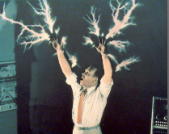
Dr. Moon captured channeling 1,000,000 volts of electricity through his body. He is standing on the conductor.
|
Since Einstein said “Science is merely the refinement of everyday thinking,” Let’s consider for a moment the above example.
Did it dawn on you? The same particles that make up any wall (anything period), Dr. Moon channeled through his body. The electrons passed through harmlessly . . . though I don’t recommend anybody doing this test at home. What he did was merely to change the frequency.
The very same particles that are key to giving a wall its atomic stability passed freely through him. If we could change the frequency of the entire atom and not just the charged electron particle, what would be the potential? Could one not pass freely through a wall? What if there was another system of atoms that are not mutually interactive with ours? Could there not be another whole world? Like adjusting the position of a hologram card, would another whole scene emerge if you could manipulate electromagnetism and then the atom onto frequencies we have not yet discovered?
The work of John Hutchison makes one wonder what the potential in nature is, especially over the ocean, to create electromagnetic aberrations that may have frightening results.
One thing is common then to all the Universe: to all reality — electromagnetic energy. If Einstein was right, it would seem time and space — hence matter — are all connected. If a change over of space could be accomplished by electromagnetism, could the same be the pathway to Time?
Time Warp
All atoms are in vortex kinesis, as it was stated at the beginning. Therefore all matter is as some level of vortex kinesis. Since it is the nature of matter, anything that might cause a change in this intensity might bring about surprising changes indeed.
We already know that the great spinning orb of the Earth, and its great mass, affects time fractionally at the surface as compared to orbital heights. Time is slowed slightly. But what if we could increase the speed at which the Earth spun, fast enough to even bend space more before it? Could we then not slow time even more? It would seem so. But it is impossible to do that. The Earth is too great a mass for us to manipulate. But warping frequencies into a dangerous spinning vortex may not be as difficult.
A vortex may be the only way because it is spinning energy, an intensified example of the natural state of any matter.
Interestingly, like Elijah’s “fiery whirlwind,” could such a vortex bring about different progressions of time, different exchanges of space by changing the frequency of the atoms in the area? An energy vortex, like a magnetic vortex, would have unlimited potential on the wavelengths around this planet since it would disrupt them first. One would not have to waste time trying to bend them with a huge atomic mass like a planet.
|
|
Even the great galaxies rotate. Intensify this effect on any level sufficiently and you can slow the passage of time. How does time really progress in deep intergalactic space? Would it progress faster since nothing is out there bending space? How much could a rapidly spinning magnetic vortex bend the electromagnetic wavelengths and hence space around it? In relation to a galaxy, our solar system is nothing more than an atom.
|
One example of an energy vortex on the force fields of this Earth may come from the eye of a hurricane. Gravity anomalies have been reported recently. These should not surprise anyone considering the vast swirling energy of a hurricane is centered at its imploding vortex core.
But this is a massive atmospheric vortex, like a tornado. No one can get close enough without being obliterated (usually). How could anything experience a time or space anomaly before being destroyed?
Unlike all the atmospheric energy required to start and maintain a hurricane or tornado, magnetic vortices are the result of changes and shifts within the magnetic field of the Earth, deep within its mantel and core. These vortices are definitely believed to swirl into and out of existence within the body of the Earth.
The recent invention of Dr. Evgeny Podkletnov certainly underscores the potential of a natural magnetic vortex. His device was created at Tampere University Labs, Finland, in 1996. It was nothing more than a superconductor (12 inch diameter) sealed inside an outer metal casing filled with liquid nitrogen. The superconductor was set over three solenoids to magnetically levitate it and start it spinning. The liquid nitrogen in the outer casing was to keep it cool while this superconductor ring spun at several thousand RPM.
The phenomenal result was accidentally discovered. One of the assistants’ pipe smoke wafted over the device while it spun at 5,000 rpm. The smoke straight away went to the top of the room where it hovered. It was discovered that gravity had been slightly shielded over the device. In essence, a spinning magnetic field (vortex) affected the most mysterious force field of gravity. Dr. Podkletnov discovered via measurements that there was a funnel of less gravity 12 inches diameter above the machine going through each floor of the building and possibly then out into space. When spun to 25,000 rpm, the device took off on its own.
This alarming relationship of gravity to a spinning magnetic field opens the door for future discussions of time and space. Gravity is essential to everything, especially this subject. We are unaware of different time progressions because we all live within the same pull of gravity, cocooning the same progression of time. It is not possible to experience another progression of time or space independent of a field of gravity that is centric to it—in other words, goes with it. Gravity is essential. Gravity may be more than just bending space, but the exact curvature of key energy frequencies that become pulled into the area of the mass, like a planet, or are attracted to the great energy of all of its combined atoms.
In the above example of speeding cars, they can never go fast enough to bend space and slow time. The simple reason is they are within the Earth’s gravity. At those speeds any person inside would have to be removed from the seat with a putty knife.This is because the car is accelerating, not the people. They are pushed back by the force of acceleration because the Earth’s gravity is greater, and the Earth is not moving at the speeds of a machine going near light-speed
But if these cars were in their own gravitational field, they could experience unlimited speed and another progression of time. If they could generate the energy to bend and disrupt all of our wavelengths, they may truly experience a very different world than ours.
Gravity is essential—both its creation and disruption. The Sun has gravity, but so does the Earth. Therefore, our tempo is set by the Earth’s pace, not the Sun’s. The Earth is a pocket of separate gravity than the Sun. To be independent of the Earth’s tempo, we must create a field independent of the Earth. So far, however, gravity has eluded us.
Gravity is more than simple attraction. It is orientation. With time, with space there must be gravity of some kind. Even the solar system is tempered by the heliosphere— the gravitational field of our sun. The “void of space” in our solar system is a lie. There are billions of wavelengths whose tempo may be set by the sun’s gravity, bent by planets, upset by several interactions, just like the mini solar system of the atom. It is interesting to note that when Pioneer 10, Pioneer 11 and Ulysses left the solar system, the last NASA could detect of them was “an incomprehensible acceleration.” They left the gravitational pull of the sun, and in the smooth ocean of wavelengths in intergalactic space they took off. How fast does light travel out there? How fast does time flow? One day we will know. But first we must understand all is energy. This is the blueprint to conquest and exploration. Nothing is impossible.
If gravity is not a curvature of space only, then it is a force within mass. As such it too is tied up in the atom. It becomes the conduit which directs the force of energy. It reflects order, not chaos; it tempers the progression of all things. It orients all things towards itself.
What is the potential in a natural magnetic vortex to affect gravity, time and space? Have they really been discovered in the Bermuda Triangle? Can they come from other sources? Is all this great power and spinning really needed to affect time, or have other, very week electromagnetic tests and warpings been done to show phenomenal things can be done just by interlocking electromagnetic fields, like in the Hutchison Effect?For a further study of recent discoveries, please consult Gian J. Quasar’s book, “The Bermuda Triangle,” released for distribution in November 2003. Order it from Amazon.com by clicking on the Amazon.com hypterlink, below:
What is Time? Is Time merely our concept for the span in which events unfold, or is Time a part of the Universe, an integral force that, like a pacemaker, acts to set the temper for all things?
We still ponder at the invisible force fields around us: gravity and magnetism. Time, like gravity, remains a stuporing mystery. Is it tied in with these force fields? What is Time?
Measurments of gravity show the ponderies of shape and mass upon it. At the equator an object actually falls slower than at the poles.
Time seems influenced by the physical as well: extremely accurate atomic clocks, placed simultaneously at sea level and at high altitudes, have shown that those at a higher altitude actually record time passing faster, where gravity and magnetism are weaker. We are such a land bound species, we have little concept of potential beyond our own daily endeavor.
Some have thought that the tales of ghosts may stem from the earth having replayed an event, a passed life, a past moment, captured and recorded by it as we do with film today. How can that be? Are these just liars, cranks, or the superstitious? Or is the kernel of truth behind these tales telling us about the power of nature around us?
In our experience thus far, these vagaries seem only minute, as minute as the temperature changes on a spring day or in the slightly shifting breeze in the dead of summer: an atomic clock records the passing being faster higher up; an object falls slower at the equator.
But nature is subject to violent shifts: a summer breeze to a Santanna, a spring day to a sudden thunderstorm in which the changes are from one extreme to the opposite in the spectrum.
Even sun spots affect our weather on earth, as do other solar forces. If force fields can affect weather, and shape and mass effect gravity, can they affect Time . . . somehow, somewhere, no matter for how brief a moment?
Gravity can even affect the travel of light. Einstein predicted, and it has been empiracally observed, that gravity slows and therefore bends light. A star’s light, even opposite the Sun, can be bent by the massive helioshpere — the Sun’s gravitational field — so that its position actually changes from our perspective here on earth.
We know how fast light travels here on earth — 186,300 miles per second — struggling with our gravitational field, then that of the Sun’s which cradles us. But how does it travel in intergalactic space . . . free of the Sun’s heliosphere?
In how many ways and by how many paths does light come to us from other galaxies, fighting and bending, slowing and speeding with the force fields it encounters?
A scientist named Ritz once did calculations based on the theory that light follows a Riemannian non euclidean geometry and that light from the farthest star would take only 17 years to get to earth. Barry Setterfield of Australia did tests in which light seemed to be slowing down.
Is Time being effected as well? Light is the expression of energy. Can Time change as the Universe slows or changes? Is Time being made suspectptible to anamolies as well as the other invisible forces of our universe it was not subject to before?
Magnetism is the longest studied geophysical data available. In the last 150 years this has showed an alarming decrease in the magnetic field, as much as 6 per cent. This field is responsible for shielding the earth from numerous dangerous solar forces. Is something warping Time?
Some years ago, a man in York, England, was working in a basement of a building which ran over an old Roman road. Suddenly, a troop of Romans marched through the wall, in full armour, completely oblivious to anything around them. Where the road was not completely excacvated he saw them from only the knees up. Where it was completely excavated he saw their full forms. They passed through the other wall and then were gone. Is this lunacy, or did the earth merely replay a scene captured in it 2000 years ago?
Some have thought that the tales of ghosts may stem from the earth having replayed an event, a passed life, a past moment, captured and recorded by it as we do with film today. How can that be? Are these just liars, cranks, or the superstitious? Or is the kernel of truth behind these tales telling us about the power of nature around us?
But how can it be? The earth has no camera, no film, no lens with which to record an event; no film upon which to store it, no camera to develop it, no projector to replay it.
The human body testifies to the power of harmony. We are the same chemicals and materials as all the Universe around us, made of the same building blocks, our tissues of the same acids, vitamins, minerals, fats, molecules and powerful electrical signals.
The human brain is more complex than anything man can comprehend. In our memories we can recall past events, in color, black & white and even technicolor. We can recalls sounds, smells, still pictures and in motion, of faces long stilled, hear voices long quieted. Our dreams are vivid spectacles, sometimes frightening but also pictures of places and past events and make-believe scenes. How can the brain do it? It has no lens, no film, no camera, no projector, but it replays pictures, moving and still, with little difficulty? . . . How can the earth do it?
Existence is so complex even the simplest form of life beggar our imagination. “To grasp the reality of life as it has been revealed by molecular biology, we must magnify a cell a thousand million times until it is twenty kilometers in diameter and resembles a giant airship large enough to cover a great city like London or New York. What we would then see would be an object of unparrelled complexity and adaptive design. On the surface of the cell we would see millions of openings, like the port holes of a vast spaceship, opening and closing to allow a continual stream of materials to flow in and out. If we were to enter one of these openings we would find ourselves in a world of supreme technology and belwidlering complexity . . . Is it really credible that random processes could have constructed a reality, the smallest elements of which — a functional protein or gene — is complex beyond our own creative capacities, a reality which is the very antithesis of chance, which excels in every sense anything produced by the intelligence of man?” — Dr. Michael Denton, Phd Microbiology.
Beyond the cell is the complexity of things not seen — gravity, magnetism . . .Time. “Softly, softly, they creep about us” to paraphrase Lewis Carroll. They leave a teasing trail of themselves, one quietly points to the other then flees before we can ponder.
Black holes exist in space, where gravity is so strong the light cannot escape, where not even time can be registered for the clock would stop, where everything vanishes. Just of what is the Universe capable and all its elements?
Even now in the 21st century we are as babes. It is not so bad that we do not know all things, but it is unforgivable that we do not even suspect that these things can possibly be.
Long before John Hutchison began his pioneering experiments into electromagnetism and alternative energy, travelers in the Bermuda Triangle had reported odd occurrences involving electromagnetism: their ships or planes would be seized by a strange vapor, then all equipment would go haywire; unexplained fogs would sit over the ocean, yet in all cases the weather was not right for creating fogs, and there was certainly no reason for electromagnetic aberrations such as they reported.
These were, in due course, put down in the category of “sea lore,” sensationalism, or attributed to occultists trying to push their supernatural views of nature. It didn’t seem to matter that most of those reporting them were veteran pilots, shipmasters, and even Coast Guard officers.
These unusual phenomena quickly formed the backbone of the “mythos” of the Bermuda Triangle, the enigma of unexplained “forces,” hints of the laws of nature running wild, of possible time warps, interdimensional transition, wormholes, and invisibility. To speak about them is to speak about the “supernatural,” the impossible, and the occult . . . until now.
Though they remain unexplained, there is no longer the lack of a cross reference for them — and this has to do with electromagnetism. And that’s where Vancouver scientist John Hutchison comes into play. His experiments into electromagnetism has unintentionally produced every phenomena reported in the Triangle. The term “Hutchison Effect” has become a moniker applied to all the peculiar and startling effects his plethora of machinery can produce.
John might be likened to many of the fictional characters of movies who stumbled onto fantastic inventions — Flubber, The Shaggy Dog, and the many other Disney movies of Kurt Russell being transformed by his madcap experiments at Medfield College. The great exception is that John is not fictional, nor are his experiments. They have penetrated the very building blocks of matter and looked squarely into the labyrinth of time and space . . . and they are all created by electromagnetism and its effects on various wavelengths! |
|
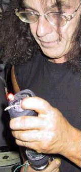
John Hutchison working on alternative energy sources in his lab.
|
It all began back in 1979. While studying the longitudinal wavelengths of Tesla (Nikola Tesla, a radio pioneer), Hutchison, limited by space in his small apartment, crammed into one room various devices that emit electromagnetic fields and wavelengths, like Tesla coils, RF generators, van De Graaf generators, etc. He turned them on and went about his work. In some unexpected way, the wavelengths these machines created interplayed to create astonishing effects. John first noticed this when an object touched his shoulder . . . one he wasn’t expecting because it was levitating!
Repeated tests have produced a number of astounding effects. These include the continued levitation of objects: wood, styrofoam, plastic, copper, zinc — they hovered and moved about, swirl around and ascend, or shoot off at fantastic speeds. With further experimentation: fires started around the building out of non-flammable materials, like cement and rock; a mirror smashed (80 feet away!), metal warped and bent and even broke, (separating by sliding in a sideways fashion), in some instances crumbling like “cookies;” some metal became white hot but did not burn surrounding flammable material; lights appeared in the air, along with numerous other corona manifestations; and water spontaneously swirled in containers . . . to name only a few.
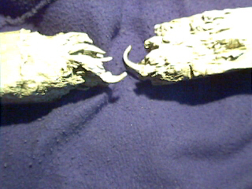 |
|
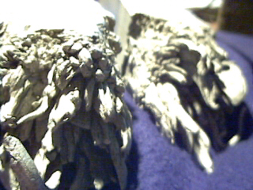 |
|
|
|
|
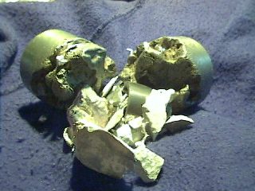 |
|
An aluminum bar, TOP LEFT and ABOVE, shredded and split by the Hutchison Effect. The metal turned wobbly like jelly before coming apart. This is called “cold melting” because no heat is involved. LEFT: Metal Cylinder crumbled apart. Photos Courtesy of John Hutchison. |
More than one observer of Hutchison’s experiments and demonstrations (he has given over 750), have not only been amazed at the results but uniformly express astonishment at the weak electrical power which seems to be sufficient to empower very stupefying results. Since basic outlets in the house supply sufficient power to operate his many machines, the power which unleashes all these incredible effects is believed to lie elsewhere, such as where these various fields interplay, since on their own the wavelengths or fields these machines create have never been noted to do this. It is at this point — call is a warp or votex, whatever you like — where things begin to happen. But how they interact is still largely a mystery. Even where they interact can be perplexing. Sometimes one must wait for days for something to happen, and 99 per cent of the time nothing happens at all. To draw an analogy, it is like trying to boil water without being able to determine the strength of the heat — in such a scenario it is not surprising it may take different amounts of time to produce the boiling effect.
Over the last 22 years, Hutchison’s work has been subject to broad though varying interest and approval. His laboratory was ransacked by Canadian officials who seized his equipment under the pretense of confiscating his antique gun collection which was, however, subsequently returned with no explanations or charges. Three nations have aired his work; he was courted by scientists in Japan, accused of treason in Canada when he went to Germany for funds to continue; Los Alamos Lab has done research on his Effect; the Canadian government seized his lab equipment once again while crated and in transit to Germany in 1990 (and never returned it despite a court order), when he was seeking financial aid to continue his studies. The military of Canada and the US has expressed a covert interest. He has been arrested by the Canadian government and placed in cuffs on his doorstep while his lab was ransacked and investigated (under the excuse of checking on his antique gun collection again); this last incident was on March 17, 2000, and may have been initiated by a neighbor who experienced an unexpected levitation in their house and then complained to the police.
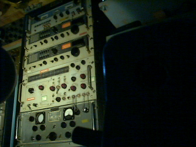 |
|
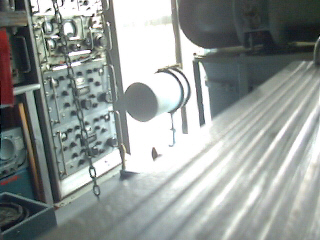 |
|
|
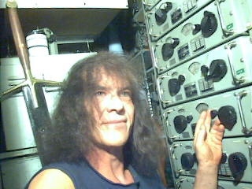 |
|
“Tinkering” in his lab. John Hutchison has developed extensive forms of free energy, including fuel cells and the Hutchison Converter, which apparently can run forever. It was first displayed in Japan in 1996 and is still running. A scientist sees fact, but a philosopher sees potential. John is both. |
Because of all this, which has been ongoing for over 22 years, his lab has undergone numerous changes, from completely disappearing into government hands, to vital pieces having been sold off to pay for subsequent financial problems.
Nevertheless, Hutchison has continued with his work. He has “tinkered” and adjusted his equipment and continues to get varying and remarkable results, many of which have been documented and photographed by McDonnell Douglas Aerospace and the Max Planck Institute in Germany.
The Hutchison Effect’s connection with the Triangle comes in many forms. Many of the effects he has created mimic those reported out there: strangely swirling clouds and lights, green glows and phosphorescence, and electromagnetic anomalies. But one discovery in John’s experiments clearly underlines the connection of the Bermuda Triangle with electromagnetism. During one experiment, John produced something undeniably “Triangle-esque.”
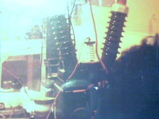 |
|
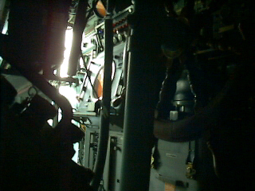 |
|
| I have personally experienced the grayish-type mist when I was doing my high voltage research; and this mist would appear and disappear. To look at it, it looks like metallic. I couldn’t see through it. So it exists . . .it exists. |
In other tests, objects have appeared that “had a cling of gray fog” moving about the room, all of which were clearly filmed on 8 mm film. One is reminded of Bruce Gernon’s feeling that the “electronic fog” traveled with his plane, or Don Henry’s encounter where the fog formed around the metal barge and caused it to vanish while at the same time effecting all of his electronic equipment.
While our first instinct is to believe that these forces can only be engineered in a laboratory, a disturbing thought comes from an observation made by electromagnetic researcher, Albert Budden. “The original way that Hutchison set out his range of apparatus was, by industrial standards, primitive and crowded, with poor connections and hand-wound coils. But it was with this layout with its erratic standards that he obtained most of the best examples of objects levitating, despite the fact that the maximum power drawn was 1.5 kilowatts, and this from the ordinary power sockets of the house mains.”
These crude ways seemed better adept at tapping into the vast power all around us. The watts produced in a lab, however, would be infinitesimal compared to the potential in the atmosphere. The estimated power in the atmosphere is best demonstrated during a thunderstorm in which lightning streaks across the sky with infinitely more watts of electricity — enough to scramble radios and other equipment dozens of miles away, enough to destroy trees and houses and melt sand into glass.
But can electromagnetism cause a plane or ship to disappear? John has kept abreast of the unexplained in the world and is well aware of the effects reported in the Bermuda Triangle. In commenting on the applied ramifications, he has observed:
It is highly probable that nature can form these fields on her own and create the right situation for the ship or aircraft to either totally disintegrate or disappear into another dimension or domain.
What should we make of such radio reports like Jenson’s, in which he says he is lost in clouds at 150 feet elevation? Remember, he vanished thereafter, but 11 hours later, long after fuel starvation, he reemerges in time briefly, to make one last call 600 miles from where he was lost, only to vanish again without trace. What about the other maydays picked up hours after fuel starvation? What about the radio and compass quirks so often reported? Is nature telling us something? Or is it guiding us to the potential in natural energy? Is the Hutchison Effect merely a small example of the greater machines in nature?
However esoteric some of this may sound, we may well inject here Time’s association with gravity and magnetism. Atomic clocks record time passing slightly faster in orbit than at sea level, the difference being that gravity is weaker higher up. An electrical current will produce a magnetic field at right angles to it, but since there are three planes of space, where is the gravitational plane? No one, including Einstein, could ever find it. What forces are really out there?
Electromagnetism may also be a gateway to something far more startling. Mark Solis writes: “It is surmised by some researchers that what Hutchison has done is tap into the Zero Point Energy. This energy gets its name from the fact that it is evidenced by oscillations at zero degrees Kelvin, where supposedly all activity in an atom ceases. The energy is associated with the spontaneous emission and annihilation of electrons and positrons coming from what is called the ‘quantum vacuum.’ The density contained in the quantum vacuum is estimated by some at 1013 joules per cubic centimeter, which is reportedly sufficient to boil off the Earth’s oceans in a matter of moments.” . . . A disappearance, a disintegration seems mild by comparison.
A long time ago, biologist Ivan Sanderson noted that the greatest number of disappearances in the world occurred in specific locales, “vortices,” he called them, which “lie on the right or east sides of the continents, and all precisely in curious areas where hot surface currents stream out of the tropical latitudes toward the colder waters of the temperate. . .” He explains this is of “enormous significance” because “these are the areas of extreme temperature variabilities which alone would predicate a very high incidence of violent marine and aerial disturbances. What more likely areas,” he continues, “for storms and wrecks and founderings, and even magnetic anomalies?” He went on to ask, “Whether these vast [natural] ‘machines’ generate still another kind of anomaly that might cause something to ‘go wrong’ . . . in our space-time continuum. In other words, could they create . . . ‘vortices’ into and out of which material objects can drop into or out of other space-time continua?”
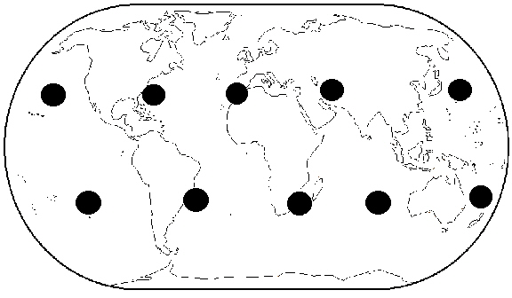 |
|
| An example of Sanderson’s 12 vortices set at regular intervals around the earth, brought to his attention by the higher incidence of unexplained disappearances therein. The North and South Pole account for the 11th and 12th vortices. |
Hutchison’s studies may not prove this, of course, but continuing results prove the unlimited potential of electromagnetism on matter.
One of the most remarkable effects is the fusion of dissimilar materials. In describing this, Mark Solis makes note that “dissimilar substances can simply ‘come together’ yet the individual substances do not disassociate. A block of wood can ‘simply sink’ into a metal bar, yet neither the block of wood nor metal bar come apart.” Moreover, he adds “there is no evidence of displacement, such as would occur if, for example, one were to sink a stone in a bowl of water.”
But perhaps one of the most remarkable aspects of his Effect is “spontaneous invisibility of materials in the ‘active zone’ of a Pharos-type Hutchison apparatus . . .” (A phenomenon which Richard Hull uncovered in historical investigations took place in the Farnsworth Fusion Machine in the 1930s, where solid metal portions of the apparatus became transport during a number of tests (Philo T. Farnsworth was the inventor of the electronic TV).).
Hutchison has added that invisibly surrounds metallic objects. Properly adjusting his equipment, he adds, the “cronons” and “gravitons” generated by his technology could cause entire buildings to disappear. The propulsive part of the Effect could get us into space faster and cheaper than any conventional fuel.
Since the effects and the materials vary exceedingly, it seems logical to assume there is some form of disruption of the basic atomic structure, considering that fusion of non identical materials, fires, levitating objects, invisibility, etc., have nothing else in common but these building blocks of matter. Electromagnetism is a doorway into a world of which we are all made. As such, its potential seems unlimited.
Since the Earth is itself an object generating electromagnetic fields, are there areas where some of these fields will intermittently interplay and cause aberrations? To be more explicit, is the Bermuda Triangle properly situated on the Earth, in the areas of correct temperatures and weather volatility, in areas of electromagnetic stresses, to create effects as Hutchison has done in his lab?
We can no longer say “impossible” to anything once the doors to the very building blocks of the universe are unlocked. The dreams and even wistful fancies of past philosophers and scientists are daily becoming reality in our modern world. It is time we as a species woke up to them. For too long we called them “supernatural” when they were not “above nature,” they were merely above our understanding of it. It is also time that science looks beyond a mere fact. We must start looking at potential whether it has immediate profitability or not. The greatest contribution in the Hutchison Effect is that it shows us the great potential in nature all around us.
 |